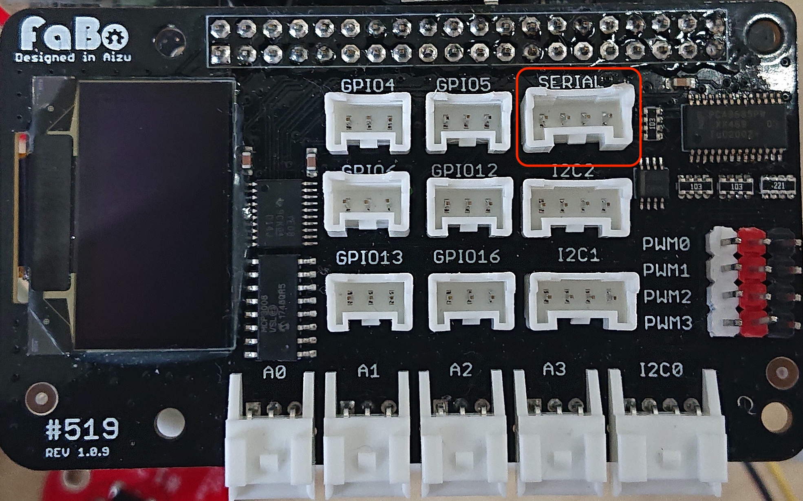

304 USBserial

サンプルコードの動作
FaBo USB Serialを使いUARTで通信いたします。
サンプルコード使用時の接続
FaBo #304 USB serial を SERIALに接続します。

※注意 #519への信号レベルは3.3Vになります。ジャンパーを3.3Vにセットしてください。 USBシリアルからは＃５１９へは、給電をしないでください。POWERジャンパピンをはずします。 また、デフォルトでは、SERIALピンのVCC（５V）からは給電されません。
インストール
1 | |
1 | |
Brick回路図
~画像〜
1 | |
1 2 3 4 5 6 7 8 9 10 11 12 13 14 15 16 17 18 19 | |
1 2 3 4 5 6 7 8 9 10 11 12 13 14 15 16 17 18 | |
1 2 3 4 5 6 7 8 9 10 11 12 13 14 15 16 17 18 19 20 | |